Объекты для живого города
Настоящие 3D-модели Unity и OBJ. Единицы — метры. Пункты выдачи в этот набор не входят.
Buildings
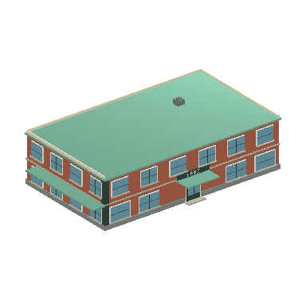
Угловое кафе2698 треугольников; 26 × 6.97 × 16.45 мOBJ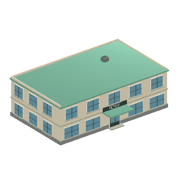
Почта2274 треугольников; 20.6 × 6.97 × 14.45 мOBJ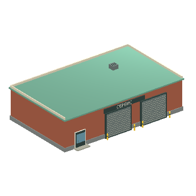
Городская мастерская1170 треугольников; 20.38 × 5.66 × 13.28 мOBJ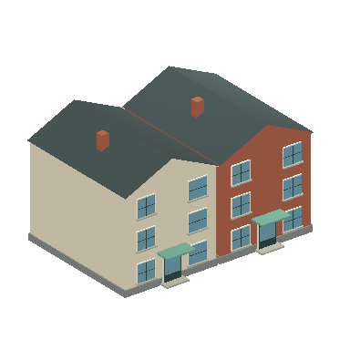
Два таунхауса1672 треугольников; 18.3 × 11.01 × 13.7 мOBJ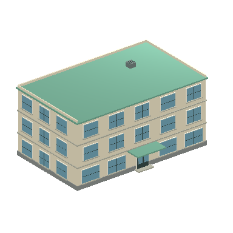
Невысокий офис3084 треугольников; 20.6 × 10.07 × 14.45 мOBJ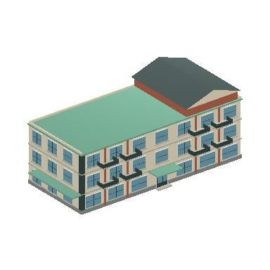
Угловой жилой дом4280 треугольников; 30 × 12.41 × 14.45 мOBJ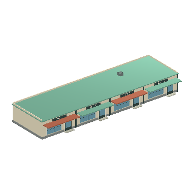
Небольшие магазины1546 треугольников; 36.38 × 4.97 × 12.1 мOBJ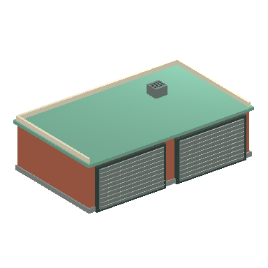
Два городских гаража420 треугольников; 12.38 × 4.01 × 7.49 мOBJ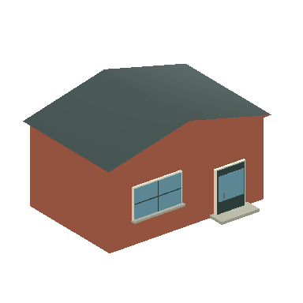
Кирпичная пристройка260 треугольников; 9.5 × 5.61 × 7.26 мOBJStreet
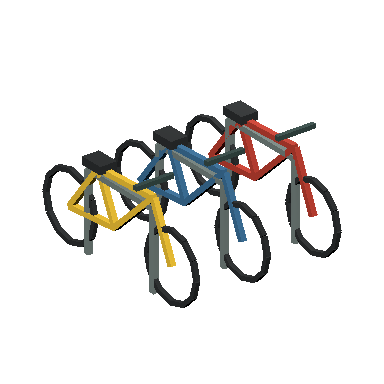
Велопарковка с велосипедами1260 треугольников; 1.9 × 1.08 × 2.12 мOBJ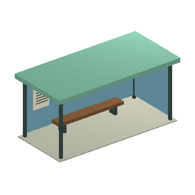
Стеклянная остановка204 треугольников; 6.2 × 2.9 × 3 мOBJ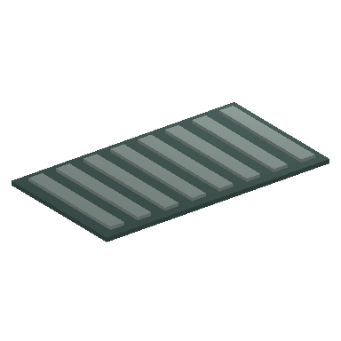
Ливневая решётка108 треугольников; 0.9 × 0.03 × 0.5 мOBJ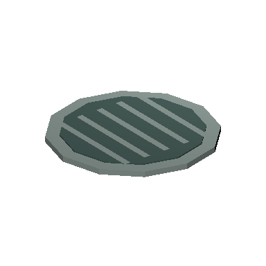
Канализационный люк106 треугольников; 0.86 × 0.04 × 0.86 мOBJ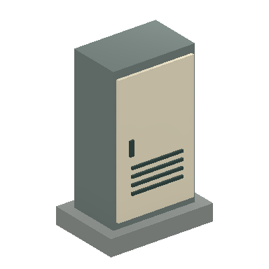
Шкаф городских коммуникаций96 треугольников; 1 × 1.55 × 0.7 мOBJ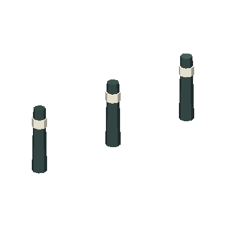
Три столбика192 треугольников; 2.6 × 0.9 × 0.2 мOBJ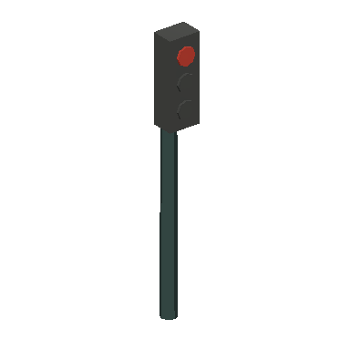
Светофор — визуальная модель140 треугольников; 0.4 × 3.45 × 0.42 мOBJ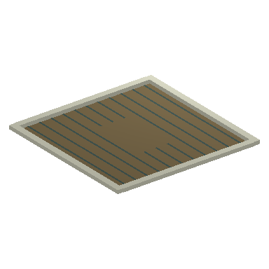
Приствольная решётка78 треугольников; 2.82 × 0.07 × 2.82 мOBJ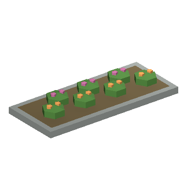
Низкая цветочная клумба462 треугольников; 4 × 0.55 × 1.7 мOBJ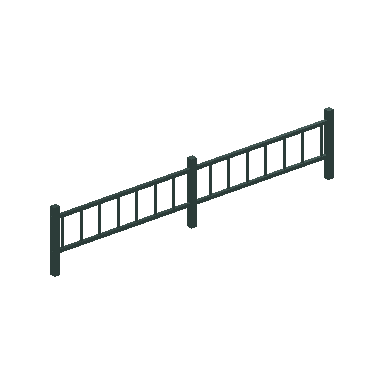
Низкое ограждение240 треугольников; 4.1 × 0.9 × 0.08 мOBJCourts
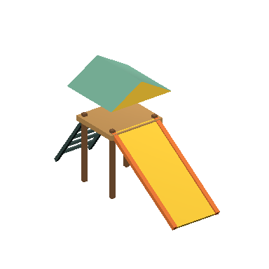
Горка188 треугольников; 2 × 3.38 × 5.37 мOBJ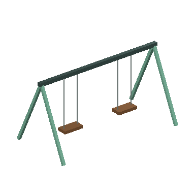
Качели132 треугольников; 5.2 × 2.8 × 2.7 мOBJ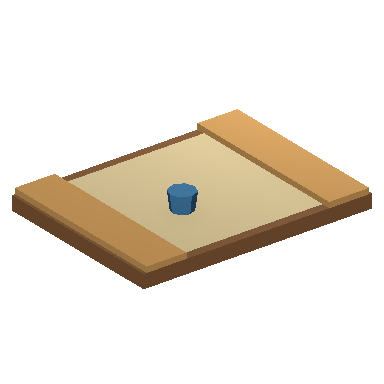
Песочница70 треугольников; 4 × 0.55 × 3 мOBJ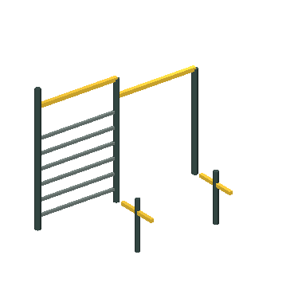
Спортивные турники280 треугольников; 4.14 × 3.2 × 2.57 мOBJ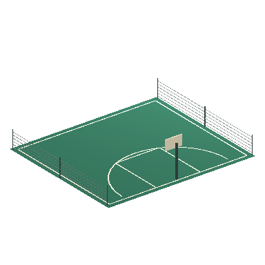
Площадка для баскетбола320 треугольников; 16 × 3.9 × 14 мOBJ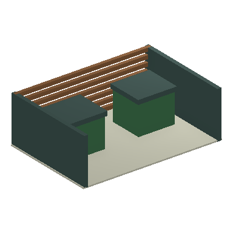
Огороженная площадка контейнеров296 треугольников; 5 × 1.71 × 3.4 мOBJ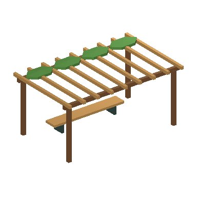
Пергола со скамьёй312 треугольников; 6.6 × 3.18 × 4.2 мOBJ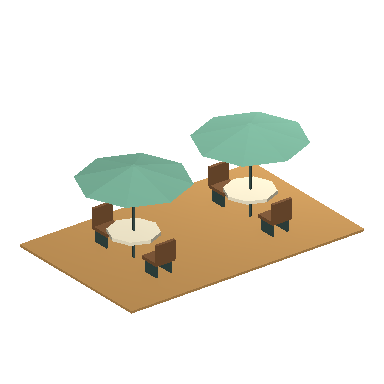
Терраса с зонтиками396 треугольников; 8 × 2.88 × 5 мOBJ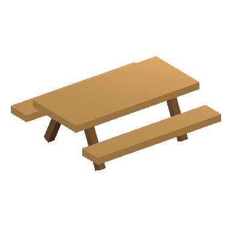
Стол со скамьями84 треугольников; 2.4 × 0.87 × 2.2 мOBJLandmarks
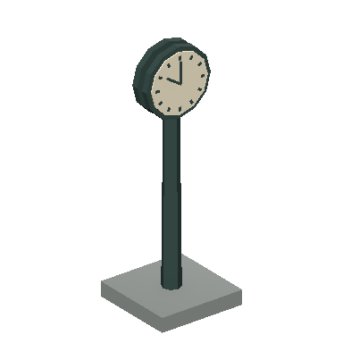
Городские часы572 треугольников; 1.8 × 5.17 × 1.8 мOBJ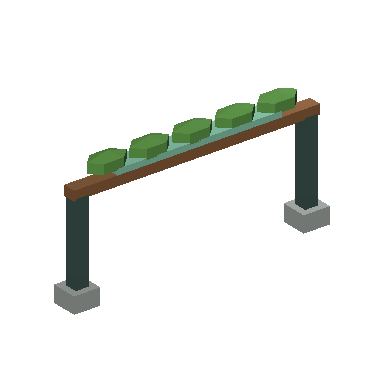
Входная арка парка192 треугольников; 7.8 × 3.9 × 0.8 мOBJ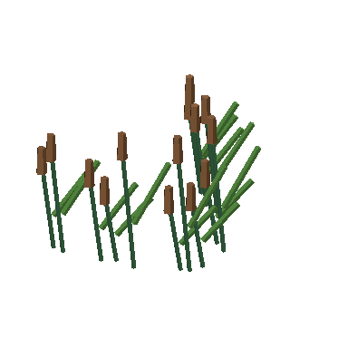
Прибрежный камыш616 треугольников; 1.9 × 1.21 × 1.18 мOBJ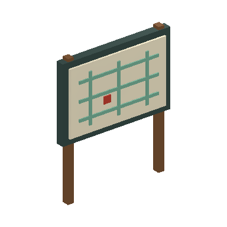
Стенд с планом района228 треугольников; 1.9 × 2.3 × 0.3 мOBJFacades
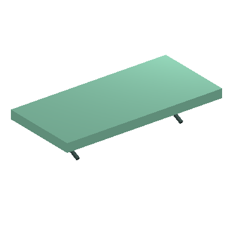
Входной козырёк36 треугольников; 3.6 × 0.73 × 1.7 мOBJ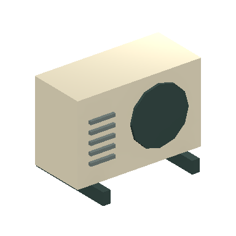
Внешний блок кондиционера144 треугольников; 1 × 0.74 × 0.7 мOBJ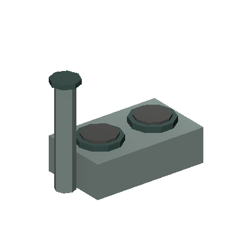
Крышная вентиляция236 треугольников; 2.4 × 1.86 × 1.2 мOBJ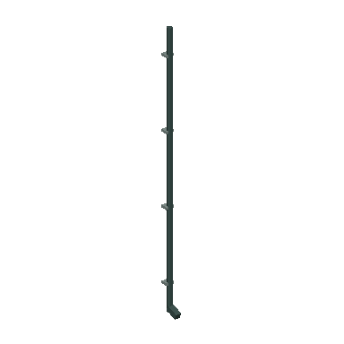
Водосточная труба84 треугольников; 0.18 × 6.06 × 0.41 мOBJ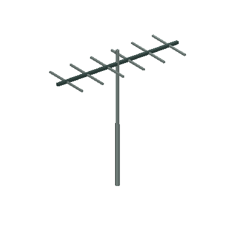
Антенна108 треугольников; 2 × 2 × 0.7 мOBJ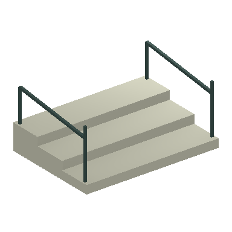
Крыльцо с перилами108 треугольников; 2.5 × 1.12 × 1.8 мOBJ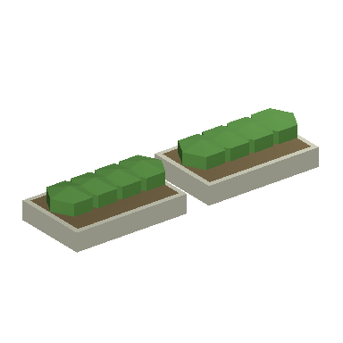
Крышное озеленение220 треугольников; 5.53 × 0.88 × 1.6 мOBJ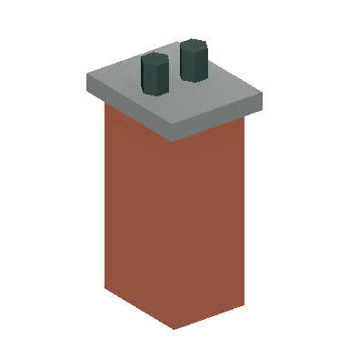
Кирпичная дымовая труба72 треугольников; 0.9 × 2.17 × 1.1 мOBJPlayerShop
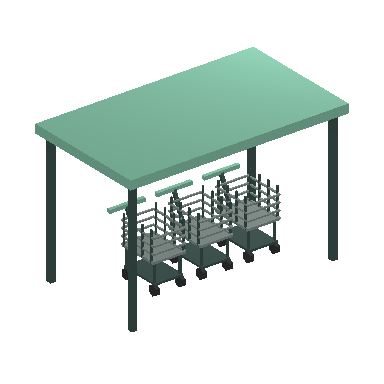
Навес для тележек1500 треугольников; 3.7 × 2.38 × 2.1 мOBJPeople
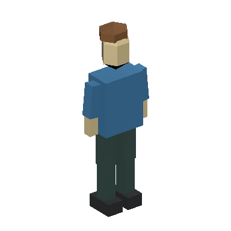
Пешеход: поза 0180 треугольников; 0.67 × 1.81 × 0.29 мOBJ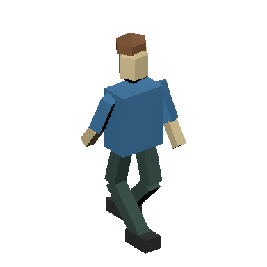
Пешеход: поза 1180 треугольников; 0.7 × 1.81 × 0.82 мOBJ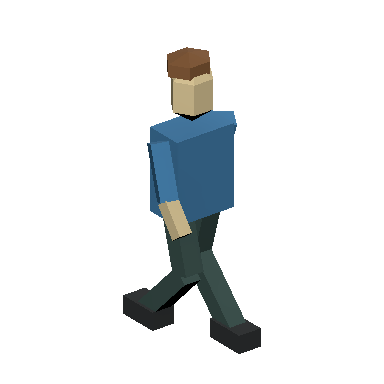
Пешеход: поза 2180 треугольников; 0.7 × 1.81 × 0.82 мOBJ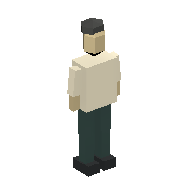
Житель: поза 0180 треугольников; 0.67 × 1.81 × 0.29 мOBJ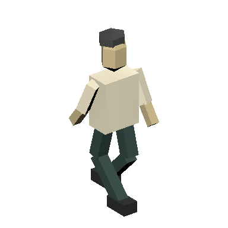
Житель: поза 1180 треугольников; 0.7 × 1.81 × 0.82 мOBJ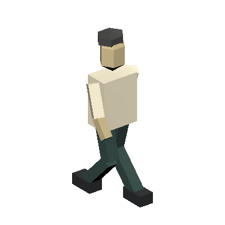
Житель: поза 2180 треугольников; 0.7 × 1.81 × 0.82 мOBJ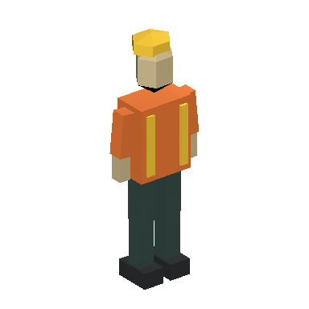
Рабочий: поза 0204 треугольников; 0.67 × 1.81 × 0.3 мOBJ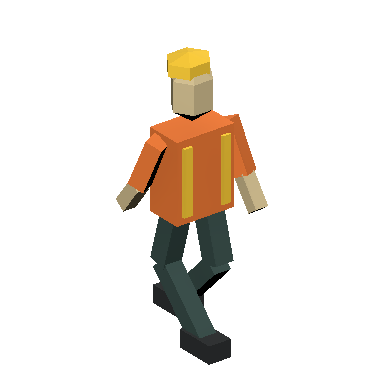
Рабочий: поза 1204 треугольников; 0.7 × 1.81 × 0.82 мOBJ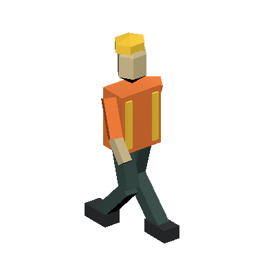
Рабочий: поза 2204 треугольников; 0.7 × 1.81 × 0.82 мOBJПосетитель: поза 0204 треугольников; 0.67 × 1.81 × 0.4 мOBJПосетитель: поза 1204 треугольников; 0.7 × 1.81 × 0.82 мOBJПосетитель: поза 2204 треугольников; 0.7 × 1.81 × 0.82 мOBJ